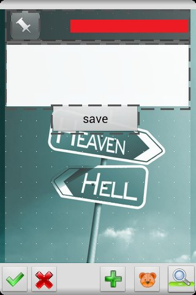
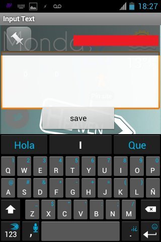
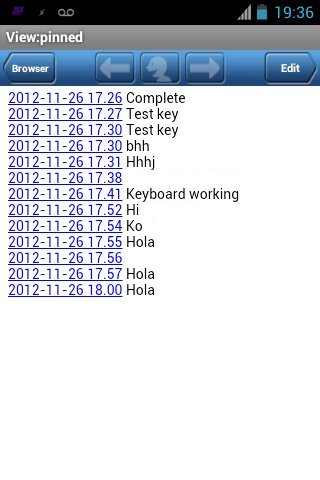

Tutorial: save GPS location to text with Tasker
Background information
I always wanted a way to say "Hey GPS, see this spot here? the one you're indicating, can you pin it with text so I can retrieve it later?". All the ways I've found required to install apps. I'm fine with that but a) install 5MB or more just to get that functionality? I didn't want to change my notes app nor have another one; b) install 5MB or more in my low memory android phone just to get that? no thank you.
Time went by, forgot about it as I'm not needing it right now (but it's nice to have). Installed ICS on my LG Optimus One, expanded the memory/A2SD, and somehow I found/tried Tasker. Yes, that program that it's very cool, everyone recommends it, posts the same common examples that you don't need but you want to use it anyway. Yes, that one. There are many alternatives, and even free with some limitations. But (people say) they are not as complete as Tasker.
Tasker task
Go to the task tab and add a new one:
Task: Location to Txt
Actions for the task:
- File > Write file. File: choose which one to open/create. Text:
%DATE %TIME - %LOC - %TEXTHERE. Check "Append" and "Add newline" - (optional). Alert > Flash. Text: Pinned! . This creates the info box that you always see (the black one).
Go to the Scene tab and create a new one.
Scene:

The necessary things are: the TextEdit (to input a description, you can skip this if you only want to save the coordinates. If that's the case, you don't even need the scene) and the button. You can add a text element that shows the coordinates and an image, because images bring life to the UI.
If you decided to include the text that shows the coordinates, enter the properties and in Text add %LOC
In the TextEdit properties, in the Text Changed tab, add a variable
(variable > variable set). Name: %HERETEXT To: %new\_val
The button, in the Tap tab.
- Task > Perform Task. Name: Location to Txt.
- Scene > Destroy scene. (pick the scene you're creating. It should be defaulted).
Save the changes and go back to the Task tab.
Task: Pin Here
- Misc. > GPS > on
- Scene > Show Scene. Name: (Pick the scene you've previously created). Display As: Activity, Full Window (or play and find one that you like). Check "Show exit button" (optional) and "continue task immediately"
- Task > wait. MS: 100. Everything else to 0. This is to show the keyboard. You can skip this (and the next) if you don't mind clicking the text box to type.
- Input > Soft keyboard
Homescreen
The only thing that is left is the shortcut/widget!
Create a widget > task. Pick Pin Here

Here, here! touch me!
Tap and you get this!

When you tap "save" it saves and shows the black info popup boxy-box. Here is an example of what the text file could look like:

When you open the link, it shows the waypoint/spot in the map (seems to only work with Google Maps, unless you change the format, that way it also works with OsmAnd - from all the maps I've tested-).
Bugs
Nobody likes bugs but it's Android. If you choose to show the keyboard when the scene it's shown, it won't close automatically; you must close it yourself (back button). It's not the script fault nor Tasker's, but Android's and how it handles things (according to the developer). Remember that we created a "wait" action? that was to bypass the "bug" opening the keyboard. This might be necessary for you or not. This depends on the phone/tablet.
How to comment
- Tweet with an URL to this post (
http://blog.quinzi.com.ar/tasker-gps-location-to-text/) - Write a post linking here and send me a Webmention.
- Commenting with disqus